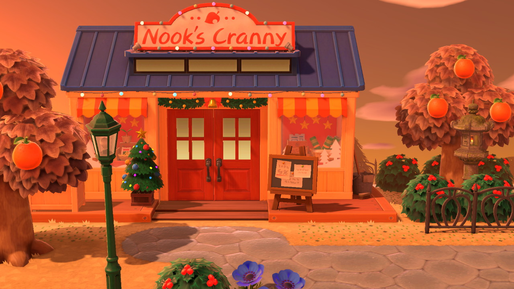
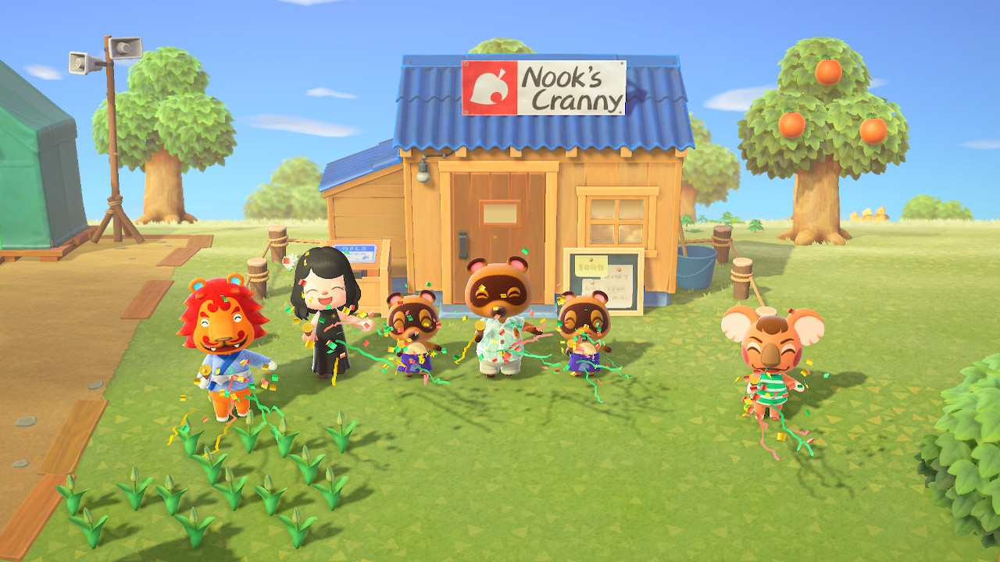
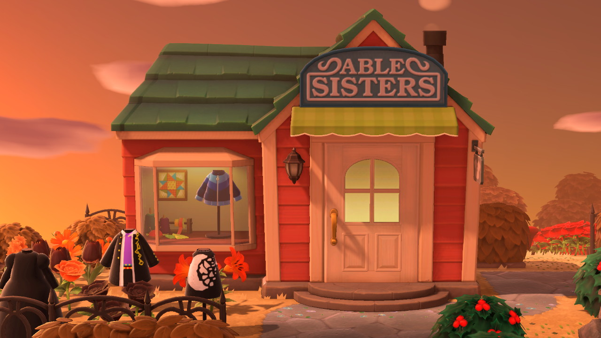
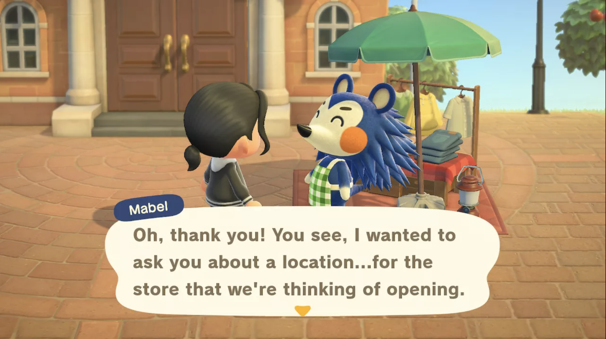

Nook's Cranny - General Store
New selection of items every day!
Open from:
8am-10pm
Moon Isle History:
The grand opening of Nook's Cranny on Moon Isle with original island residents, Canberra and Rory.
Able Sisters - Tailor Shop
All the latest seasonal trends!
Open from:
7am-9pm
Moon Isle History:
Before opening a store on Moon Isle, Mabel would stop by the plaza with a limited selection of clothing.
